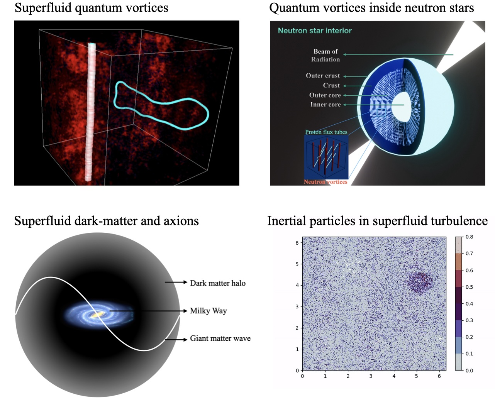

PhD thesis
Studies of Models of Superfluids from Nanometres to Astrophysical Scales
Sanjay Shukla · Indian Institute of Science, Bangalore · 2024
Abstract
“Superfluids constitute a fascinating class of fluids characterised by their vanishing molecular viscosity.”
Add your abstract here.
Thesis outline
- Introduction
One line about this chapter. - Chapter title
One line about this chapter. - Chapter title
One line about this chapter. - Chapter title
One line about this chapter. - Conclusions and outlook
One line about this chapter.
Related publications
- Statistical properties of superfluid turbulence in ⁴He — Physical Review E (2023)
- Inertial particles in superfluid turbulence: coflow and counterflow — Physics of Fluids (2023)
- Gravity- and temperature-driven phase transitions in a model for collapsed axionic condensates — Physical Review D (2024)
- Neutron-superfluid vortices and proton-superconductor flux tubes: a minimal model for pulsar glitches — Physical Review D (2024)
- Capture and release of quantum vortices using mechanical devices in low-temperature superfluids — Physical Review B (2025)
How to cite
S. Shukla, Studies of Models of Superfluids from Nanometres to Astrophysical Scales, PhD thesis, Indian Institute of Science, Bangalore (2024).